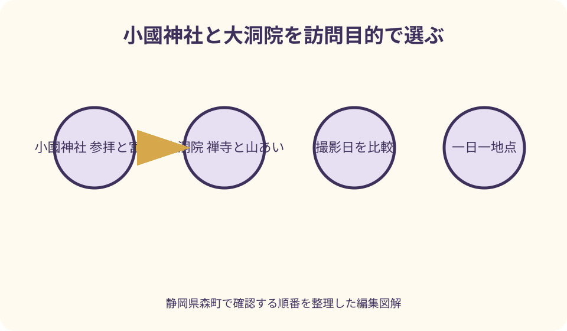
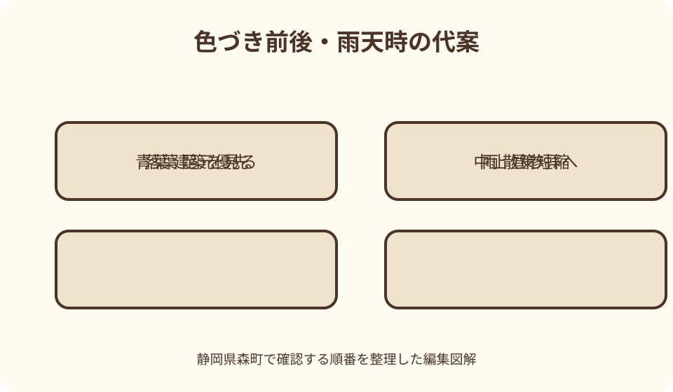

森町観光・紅葉｜最終確認 2026-08-10
静岡県森町の紅葉スポット比較｜小國神社・大洞院を町全体で選ぶ
静岡県森町の紅葉は、小國神社と大洞院を同じ『11月下旬の名所』として並べるだけでは選べません。川沿いの参拝散策と、山あいの禅寺境内では、日当たり、木の種類、雨風、落葉の進み方、駐車と歩行が違います。森町公式の当年紅葉ページでは、地点ごとの写真が撮影日付きで更新される年があります。更新日ではなく撮影日を見て、神社・寺院の公式で参拝、駐車、催しを確認し、一日一地点を基本にします。本記事は個別スポットの詳細を繰り返さず、町全体の比較入口を作ります。

町全体INDEXは見頃予想より確認先を示す
紅葉は気温、日照、雨、風で毎年変わります。前年の『見頃』と同じ日を予約しても、今年の同じ景色になるとは限りません。
森町公式、観光協会、寺社公式は役割が違います。町は地点比較、観光協会は周遊と行事、寺社は参拝・駐車・当年運営を確認する入口です。
本記事は小國神社と大洞院の個別紅葉記事を要約しません。どちらを選び、いつ詳細ページへ進むかという上位判断に絞ります。
筆者が同日に二地点を歩いた体験談でもありません。2026年8月10日時点の公式情報を基に、秋に更新すべき項目を整理しています。
撮影日・更新日・訪問日を三つに分ける
町の紅葉ページを開いたら、ページ全体の更新日より、各写真が小國神社または大洞院で撮影された日を探します。
更新日が新しくても、目的地写真が数日前の場合があります。別地点の当日写真を自分の目的地へ流用しません。
撮影日から訪問日までに、強風、雨、冷え込みがあったかを見ます。色づきが進むだけでなく、落葉が増える可能性も考えます。
訪問当日は寺社の公式発信と現地表示を優先します。数日前の見頃表現を、立入、駐車、催しの現在情報にしません。
小國神社は参拝と宮川沿いの散策を一組にする
小國神社を選ぶ理由は、遠江国一宮への参拝と、境内を流れる宮川沿いの季節景観を同じ訪問で見たいことです。
鳥居へ着いたら紅葉散策へ直行せず、神社の案内と参拝動線を確認します。御祈祷、御朱印、祭事を希望する人は別の受付条件を調べます。
宮川沿いは水位、濡れた石、木の根、落葉で足元が変わります。紅葉写真で見た場所へ近道せず、現地の通行表示に従います。
ことまち横丁を食事や休憩へ組み込めますが、紅葉の待ち時間を必ず吸収できるとは限りません。店舗営業と売り切れを別に確認します。
大洞院は禅寺参拝と山あいの境内を一組にする
大洞院を選ぶ理由は、曹洞宗の寺院へ参拝し、山あいの境内と紅葉、森の石松の伝承を別々に確かめたいことです。
寺院公式は大洞院の由緒、参拝、紅葉の当年情報を確認する入口です。紅葉祭や夜の催しは過去年の写真から実施を推測しません。
石松の墓所は紅葉の撮影小道具ではありません。参拝と伝承への敬意を持ち、供養や寺院の営みを妨げない順で訪ねます。
山道や境内は雨、苔、落葉で滑りやすさが変わります。町なかの舗装路と同じ靴、同じ歩行時間で計画しません。
二地点の色づきが同日同程度とは限らない
小國神社と大洞院は同じ森町でも、川沿いと山あい、日当たり、風、樹木の位置が違います。一方の見頃を他方へ当てはめません。
同じ境内でも、入口、川辺、本堂周辺、日陰で青葉、色づき、落葉が混在します。『全体が見頃』という一語だけで撮影場所を固定しません。
町公式の地点別写真を並べ、同じ撮影日か、撮影箇所はどこかを確認します。比較条件が違う画像で優劣を付けません。
色の進み方が違えば、二地点を追って移動するより、参拝したい方を一地点選びます。紅葉は参拝地の一季節として受け止めます。
一日一地点を基本にし、二地点は条件付きにする
初訪問は小國神社か大洞院の一方を選びます。参拝、境内散策、休憩を急がず、日没前に退出できる構成です。
二地点を回るのは、両方の直近撮影、寺社の参拝可否、駐車、道路、天候、日没が確認できた日だけにします。
一地点目で混雑、雨、足の疲れがあれば二地点目を取り消します。予約のない紅葉巡りだからこそ、当日縮める余地を使います。
二地点を結ぶ途中に町なかの食事や買い物を追加すると、退出が遅れます。食事を一回決め、土産は帰路上の一か所に絞ります。

車移動は駐車場の規模より退出経路を見る
駐車台数の過去表示は、当日の空きや使える区画を保証しません。寺社公式の紅葉期案内と現地係員の誘導を優先します。
小國神社周辺は参拝車と横丁利用が重なる可能性があり、大洞院は山あいの道路条件があります。同じ駐車戦略を使いません。
満車時に路上、農道、私有地へ停めず、旋回を繰り返して歩行者へ近づきません。待機や時間変更の指示に従います。
帰りは入口と同じ道とは限らず、規制や誘導が変わる場合があります。ナビの細道より現地標識を優先し、運転者は紅葉を見上げません。
車なしは二地点周遊より一地点往復を作る
森町公式の公共交通から鉄道、バス、町営バス、タクシーへ進みます。観光案内の通常アクセスを紅葉期の臨時運行へ置き換えません。
小國神社は臨時バス等が案内される年でも、訪問年の運行、乗り場、帰りを確認します。過去の時刻を保存して使いません。
大洞院は駅からの徒歩だけで考えず、タクシーの往復配車と迎車場所を相談します。山あいに常時車が待つとは限りません。
車なしで二地点をつなぐと接続と待ち時間が増えます。一地点と町なか、または一地点往復にし、帰りの便を先に確保します。
混雑は人・車・撮影者の三種類に分ける
人の混雑では、参道や橋、受付前で立ち止まれる場所が減ります。家族が離れない集合場所と退出時刻を決めます。
車の混雑では、到着だけでなく駐車場から公道へ出る時間が延びます。次の予約や帰りの列車へ通常所要で接続しません。
撮影者の混雑では、同じ構図を待つ列や三脚で通路が狭くなります。写真を撮れない時に別の立入区域を探しません。
混雑情報は地図アプリだけでなく、寺社の当日発信、道路規制、現地係員から確認します。早朝なら無条件で自由に入れるとも考えません。
撮影は寺社参拝・通行・プライバシーを優先する
境内に入ったら撮影禁止、立入禁止、三脚、ドローン、商用撮影の表示を確認します。屋外だから自由に撮影できるとは限りません。
本殿、本堂、仏像、法要、祈祷、墓所は扱いが異なります。寺社へ確認せず、望遠で禁止区域を撮る方法も避けます。
橋、参道、階段の中央で構図を待たず、通行者を先に通します。子どもや他人の顔が写る場合は公開方法へ配慮します。
ドローンは航空法だけでなく、土地管理者、神社・寺院、周囲の安全が関わります。無断飛行を紅葉撮影の選択肢にしません。
雨天は色の濃さより足元と撤退を優先する
雨で葉の色が濃く見えることがあっても、石、木橋、苔、落葉、土が滑りやすくなります。撮影上の利点を安全より優先しません。
傘で視界と通路幅が狭くなり、カメラ操作中に片手がふさがります。雨具を使い、機材を減らし、歩行中は撮影しません。
宮川の水位や大洞院周辺の山道に不安があれば、境内散策を短縮します。立入表示がなくても危険を感じたら引き返します。
強雨、雷、強風、道路規制では訪問を中止します。雨が止んだ直後も増水と枝落ちが残る可能性を考えます。
青葉が多い日は寺社と建築を主目的へ戻す
色づき前なら、神社・寺院への参拝を第一にし、青もみじと水辺、山門や境内の構成を静かに見ます。
森町公式には小國神社と大洞院の青もみじを紹介するページもあります。紅葉の失敗ではなく別季節の景観として確認できます。
赤い葉を求めて境内外の山、農地、私有地へ入りません。公式に公開された範囲で、一地点の参拝を終えます。
訪問を延期するなら、当年紅葉ページの更新開始を待ちます。前年の日付から一週間後なら見頃という計算はしません。
落葉後は地面の色より滑りと寺社の営みを見る
落葉が増えた後は、濡れた葉が段差や側溝を隠します。落ち葉のじゅうたんへ入る前に通行可能な道か確認します。
木に葉が少なくても、小國神社の参拝、大洞院の禅寺と石松の伝承は残ります。紅葉だけを訪問価値にしません。
落葉を集め、並べ、枝へ戻して撮影せず、植物や境内の物を持ち帰りません。清掃や参拝動線を妨げます。
次の年へ再訪する場合、撮影日、天候、混雑、交通を記録します。一回の外れを地点の評価やランキングにしません。
紅葉祭・ライトアップは当年告知がある時だけ計画する
観光協会の年間行事には紅葉祭の季節的な記載がありますが、開催日、内容、会場、駐車を固定日として扱いません。
大洞院や小國神社の過去年ライトアップ写真が検索されても、今年も同じ照明、時刻、区域で行われる保証はありません。
当年の寺社・主催者公式に実施案内がなければ、夜間拝観を予定しません。通常閉門後の境内へ照明を期待して向かいません。
実施日でも雨、風、混雑、運営判断で変更される場合があります。出発直前の中止・交通情報を確認し、昼の参拝を代案にします。
食事と休憩は紅葉地点ごとに別案を持つ
小國神社では横丁を候補にできますが、紅葉期の席、商品、営業を保証しません。食事を待てる限界と売り切れ時の代案を決めます。
大洞院周辺で、同じような飲食選択肢があるとは考えません。寺へ入る前に食事、飲料、トイレを町なかで整える方法があります。
境内へ持ち込んだ飲食物を自由に食べず、許可された場所を確認します。ごみを残さず、墓所や参道を休憩席にしません。
食事のため別地区へ移動するなら、紅葉二地点目を外します。夕方の運転と駐車を増やす組み方を避けます。

家族・高齢者は歩幅とトイレから地点を選ぶ
子ども連れは川辺、階段、車道、混雑で大人の手が足りるか考えます。紅葉写真を撮る間に子どもを一人で待たせません。
ベビーカーは境内全域を通れると断定せず、段差、砂利、混雑、置き場を寺社へ問い合わせます。抱っこひもの暑さにも注意します。
高齢者は駐車から参拝場所、トイレ、休憩、坂を確認します。町全体を回るより一地点で退出できる旅程にします。
同行者が疲れたら、車内に一人で長時間残して撮影を続けません。全員で戻るか、安全な休憩場所を施設へ尋ねます。
服装と機材は二地点周遊ではなく一地点分に絞る
靴は小國神社の川沿い、大洞院の山あいのどちらでも、濡れた落葉と段差へ対応できる歩きやすい物を選びます。新品の靴を当日初めて長時間使いません。
朝夕の冷えと日中の暖かさへ対応できる重ね着にし、雨具を携帯します。紅葉写真のため薄着を続けたり、和装で滑りやすい道へ入ったりしません。
カメラは自分で安全に持てる一台を基本にし、三脚や交換レンズを増やして同行者の歩行を遅らせないようにします。機材を参道へ置いて場所を確保しません。
予備電池、記録媒体、雨よけを準備しても、撮影できない区域や混雑では収納します。一枚撮ることより、寺社の規則と安全な退出を優先します。
町全体の色づき記録は同じ四項目で残す
小國神社と大洞院を比較する時は、訪問地点、確認日時、色づいて見えた樹木の範囲、落葉の状態を同じ書式で記します。『町内は見頃』という一語へ縮めません。
写真には鳥居、山門、橋、案内板など位置を後から特定できる目印を一枚含めます。望遠で切り取った赤い葉だけでは、地点全体の判断材料にならないためです。
朝の逆光、午後の日陰、雨上がりでは同じ葉も色が違って写ります。画像の鮮やかさだけを比較せず、撮影方向と天候を短く添えます。
同行者が確認した歩行距離、駐車から境内までの混み方、休憩した場所も残すと、翌年の家族計画へ使えます。色づき記録と安全記録を別欄にします。
SNSへ投稿する場合は撮影日を明記し、現在も同じ状態だと受け取られる表現を避けます。私有地、参拝者の顔、車両番号が写った画像は公開前に確認します。
良い点——町と寺社の二方向から色づきを確認できる
良い点は、町公式が小國神社と大洞院を地点別に撮影し、寺社も当年の境内や運営を発信できることです。
小國神社は参拝と宮川、大洞院は禅寺と山あいという異なる秋の景観があります。数ではなく訪問目的から選べます。
紅葉前後でも青もみじ、寺社建築、地域史、食事へ目的を変えられます。見頃の一点だけへ旅行価値を依存させません。
観光協会の秋の森町めぐりは町内の位置関係を考える入口になります。各地点の詳細は寺社公式へ戻して確認できます。
注文したい点——地点別撮影日を同じ画面で比較しにくい年がある
注文したい点は、当年紅葉ページの公開時期や更新形式が年により変わり、前年記事が検索上位に残ると現在情報を誤認しやすいことです。
最新年への共通URL、地点別の撮影日、撮影場所、色づき段階、過去年度表示が一画面にあれば、比較しやすくなります。
寺社の駐車、催し、ライトアップ、中止情報も町の紅葉ページから直接たどれると、過去写真による夜間訪問を減らせます。
車なし案内は通常交通と臨時交通を分け、帰りの便を目立たせる必要があります。本記事は固定時刻を載せず確認順で補います。
代案・結論——撮影日を見て参拝したい一地点を選ぶ
第一に町公式で地点別写真の撮影日を比較し、第二に寺社公式で参拝、駐車、催し、第三に交通と天候を確認します。
参拝と川沿いなら小國神社、禅寺と山あいなら大洞院を選びます。色づきだけで一日に両方を追いません。
雨、混雑、青葉、落葉、催し中止なら、境内を短縮し、参拝、町歩き、食事、再訪へ切り替えます。
結論は、見頃を当てるより更新日時点を正しく読むことです。一地点を敬意を持って訪ね、安全に退出できれば秋の森町観光は成立します。
大石の視点——紅葉の外れを地域の外れにしない
私（大石）は、葉の色だけで森町の訪問を成功・失敗に分けません。参拝、川の音、山門、町の食は、見頃の前後にもあります。
写真はその日の一部を切り取ります。公式写真と自分の景色が違っても、撮影日、天候、場所の差を記録すれば次の判断材料になります。
移住下見を兼ねるなら、紅葉期の渋滞を日常交通の全てと決めつけず、通常日にも道路、買い物、公共交通を確認します。
この記事の確認日は2026年8月10日です。色づき、駐車、催し、交通は変わるため、秋の訪問直前に当年公式を読み直してください。
一週間前の写真を当日の景色と読み替えないため、保存する画面には撮影日と閲覧日を一緒に書き込みます。小國神社と大洞院で更新日が違えば、新しい方だけを町全体の代表にせず、二地点を別々に判断します。
同行者と相談するときは、赤さの希望より先に歩ける距離、参拝したい場所、帰りの時刻を共有します。色づきが期待より早い、または遅い場合も、どの条件を残せば訪問を続けられるかが明確になります。
訪問後は駐車待ちの長さや歩いた区間を、色づきの感想とは別に記録します。翌年は紅葉写真だけで日程を決めず、同じ曜日や催しの有無も照合することで、地域と参拝者の双方に無理の少ない再訪計画になります。
公式情報・確認先
掲載内容は次の一次情報を基礎に整理しました。営業、料金、催し、交通は変わるため、出発前または手続き前にリンク先で最新情報を確認してください。
- 小國神社・大洞院の青もみじ（静岡県森町、2026-08-10確認）
- 森町紅葉情報2024（静岡県森町、2026-08-10確認）
- 森町の公共交通について（静岡県森町、2026-08-10確認）
- 紅葉を楽しむ、秋の森町めぐり（森町観光協会、2026-08-10確認）
- 四季のイベント（森町観光協会、2026-08-10確認）
- 遠江國一宮 小國神社（小國神社、2026-08-10確認）
- 大洞院（大洞院、2026-08-10確認）